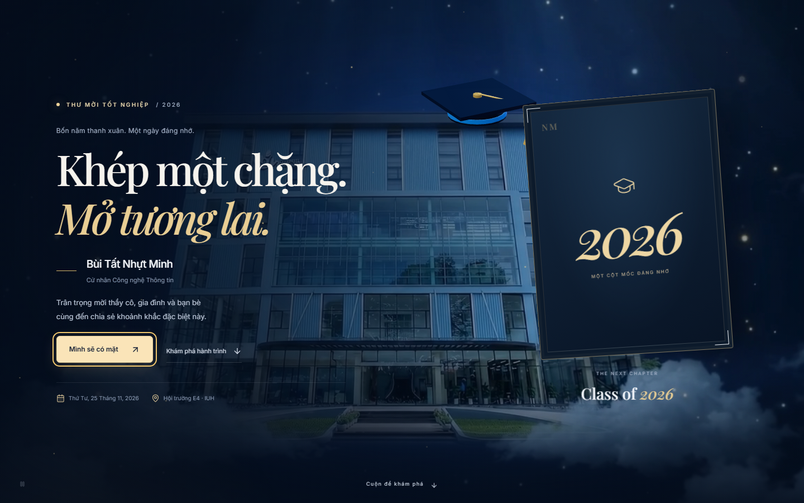
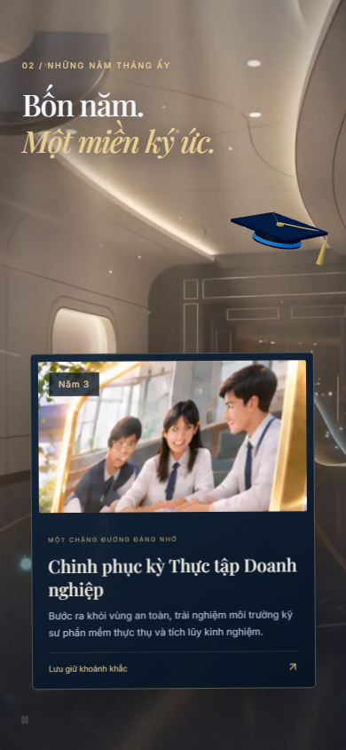

← Bộ ảnh và promptAUDIT + DESIGN CONTRACT · 14/11/2026
Bản thiết kế tiếp theo:
mỗi nhịp cuộn là một bước trong không gian.
Đây là kế hoạch đã cụ thể hóa để tiếp tục sau khi có video. Chưa tuyên bố bản web cuối đã hoàn thành. Không có video Veo mới nào được tạo hoặc trả về trong đợt chuẩn bị này.
Điều đã chốt từ trao đổi
- Không header/menu dày, không dashboard hay lưới bốn card cùng lúc.
- Hero là lời mời + khung ảnh thật; một nhịp cuộn phải tiến rõ vào trường.
- Mỗi năm có một chặng để xem. Đến nơi camera dừng, nền vẫn sống, nón bay nhẹ.
- Ở card Năm 4 đã gần thấy cửa; cuộn thêm một nhịp thì card rời đi, cửa mở và camera đi thẳng vào hội trường, không có điểm chờ riêng.
- Nón 3D dùng riêng xuyên suốt; nhân vật/ảnh/form không bị vẽ vào video nền.
- Các cảnh thông tin và nhập liệu cho phép đọc/gõ thoải mái, không tự trượt sang cảnh khác.
Cập nhật luồng cửa: S06 không còn là điểm dừng cần tạo video. T05 nối thẳng S05 (Năm 4 đã gần thấy cửa) với S07 (hội trường). Các ID còn lại giữ nguyên; tổng 15 clip.
1. Dựng lại trải nghiệm
Ngôn ngữ hình ảnh navy, ivory và vàng ấm; typography có khoảng thở, trang trọng. Cảnh chiếm trọn viewport; lời mời, ảnh, card và form chỉ hiện đúng lúc. Hạn chế hoạt động trang trí khi đang đọc hoặc nhập liệu.
| Đoạn | Nội dung và chuyển động |
|---|
| S01 → T01 → S02 | Hero có mây chuyển động. Cuộn đầu kích hoạt bay vào trường; ảnh/chữ rời cảnh theo chiều sâu. Không đòi người xem kéo qua hai màn hình trống mới tiến. |
| S02 → S05 | Một card mỗi năm. Nhịp vào/card hiện, giữ/nền sống, rời/card lùi vào không gian. Cuộn tiếp mới bay tới card kế; cuộn ngược đi về chặng trước. |
| S05 → T05 → S07 | Tại Năm 4 đã gần thấy cửa đóng. Một cử chỉ cuộn tiếp kích hoạt T05: card rời đi, cửa mở và nón cùng camera đi vào hội trường liên tục. Không dừng ở cửa và không đòi nhịp cuộn thứ hai. Nhân vật chỉ hiện sau khi camera ổn định. |
| S08 | Thông tin, lịch và Maps rõ ràng, chữ dễ đọc; nền ít hoạt động, nón ở mép. |
| S09 | Lưu bút và xác nhận được ưu tiên. Không dùng nhãn kỹ thuật. Kết thúc ấm áp, không chuyển cảnh khi form đang focus. |
2. Hợp đồng điều khiển chuyển động
idle → preparing-next → traveling → settling → idle
idle ↔ modal-open
mọi trạng thái → reduced-motion / fallback
- Một cử chỉ, một đoạn bay: tích lũy wheel/touch có chủ ý; chặn phần đuôi quán tính trackpad, không queue nhiều cảnh do một lần vuốt. Ghi nhận tối đa một yêu cầu kế có chủ ý; không chạy tự động qua toàn timeline.
- Nhịp phản hồi: phản hồi thị giác đầu dưới khoảng 100 ms là mục tiêu; đoạn bay thử ở 0.9–1.4 s, easing có tăng/giảm tốc. Các số này cần đo khi ráp, không phải chỉ số hiện tại.
- Khoảng dừng: đến anchor thì camera khóa, video ambient phát tiến 1x liên tục. Không lắc thời gian tới/lui, không loop cả clip dolly, không tự mở cửa.
- Cuộn ngược: về đúng điểm dừng, có chiến lược camera ngược riêng; không đảo ambient để giả chuyển động. Nếu reverse clip chuyển cảnh gây hiệu ứng môi trường chạy ngược rõ, dùng bản dựng đường về/cross-composite được duyệt.
- Input: wheel, touch swipe, Arrow/PageDown/Space theo ngữ cảnh; không chặn phím khi đang nhập. Modal/form/Maps scroll không được biến thành lệnh chuyển cảnh.
- Loading: giữ cảnh hiện tại và nội dung thao tác được; chỉ rời khi khung đầu chặng tới đã sẵn sàng, có poster/fallback khi tải lỗi. Không treo trên màn đen.
3. Ráp tài nguyên sau khi bạn tạo xong
- Chạy check_assets, đọc báo cáo từng clip, duyệt thủ công hình học/camera/vòng lặp.
- Đo actual_motion_window_seconds của T01–T05, T07 và T08; cắt phần đứng đầu/cuối và retime riêng đoạn di chuyển. Giữ video gốc trong OUTPUT.
- Đối chiếu endpoint đoạn nối với REFERENCE của ambient; sửa seam bằng căn đúng camera/điểm cắt, không che sai hình học bằng dissolve dài.
- Encode bản web không âm thanh, fast-start; tạo poster cho từng anchor; profile 720p mobile/1080p desktop tùy nguồn. Không ship cùng lúc toàn video gốc + toàn sequence cũ.
- Thiết kế scene controller tách khỏi DOM content, một Canvas nón/actor, một bộ compositor nền. Các ID S01–S05, S07–S09 / T01–T05, T07–T08 là nguồn cấu hình duy nhất.
- Đặt nón theo waypoint từng transition, thống nhất vị trí/depth lúc bàn giao; thêm shadow/lighting vừa đủ, tránh text và form.
- Thay ảnh thật, xác nhận event data và OG; hoàn thiện kiểm thử trước khi công bố.
4. Hiệu năng và fallback
- Tải cảnh đầu trước; giữ cảnh hiện tại và kế tiếp, không decode 15 video cùng lúc.
- Pause tab ẩn, tôn trọng reduced-motion. WebGL lỗi thì lời mời, ảnh, lịch, Maps và RSVP vẫn dùng được.
- Ưu tiên phần ảnh và chữ đọc được trên 360×640, 390×844, tablet và desktop; không dùng toàn layout desktop crop sang mobile.
- Đo FPS, LCP, số decoder và bộ nhớ GPU trên máy/điện thoại thực. Hiện chưa có chứng cứ để cam kết 60 FPS hoặc điểm Lighthouse cụ thể.
5. Phát hiện từ source hiện tại
M01 · P0Điều khiển cuộn
Hiện tại: Web hiện vẫn ánh xạ quãng cuộn liên tục vào progress; chưa có khóa một nhịp cho wheel/trackpad. Hero còn dùng 2 màn hình cuộn, campus 5 màn hình.
Bước tiếp: Thay bằng bộ điều khiển theo điểm dừng: một cử chỉ có chủ ý kích hoạt một đoạn bay ngắn rồi dừng. Lọc quán tính trackpad, ngăn bỏ qua nhiều chặng, hỗ trợ phím và touch. Không ép cuộn khi đang nhập form.
src/components/experience/ScrollDirector.tsx; src/config/scenes.ts
M02 · P0Video nền tại chỗ
Hiện tại: Đã tách video forward ambience và camera ở bản hiện tại, nhưng video đứng yên đang là bản xử lý từ clip camera di chuyển. Không tương đương footage được tạo riêng cho từng vị trí.
Bước tiếp: Thay tám ambient plate bằng clip Veo đã được duyệt camera lock, hình học và loop. Giữ bản hiện tại làm fallback; không đảo clip để nối vòng.
src/components/experience/VideoSceneBackground.tsx; scripts/prepare-living-scenes.py
M03 · P0Tuyến đi giữa các cảnh
Hiện tại: Campus/door hiện theo ảnh rời và thời gian video hardcode. Hero tiến bằng CSS scale, không phải dolly 3D thật.
Bước tiếp: Dùng T01–T05, T07 và T08 đã duyệt làm tuyến di chuyển. Đo cửa sổ camera thật trong từng clip, cắt/retime về nhịp ngắn; giữ endpoint tương thích. Một gesture không phát cả 8 giây nguồn.
src/config/journey.ts; src/components/experience/CameraPathCanvas.tsx
M04 · P0Ráp đầu-cuối video
Hiện tại: Video gốc giữa các scene có khác biệt góc máy/kiến trúc nhỏ. Crossfade có thể che phần nào nhưng không sửa phối cảnh.
Bước tiếp: Dùng đúng một ảnh chuẩn cho điểm đến của đoạn nối và ảnh đầu của ambient tiếp theo. So sánh endpoint bằng ảnh chồng và duyệt trực quan; không dùng dissolve dài để che hình học sai.
public/videos; src/components/experience/VideoSceneBackground.tsx
V01 · P1Thiệp mời và ảnh cá nhân
Hiện tại: Khung ảnh thật đã có chỗ nhưng invitationPortraitUrl chưa được đặt. portrait.png hiện tại vẫn là chibi minh họa.
Bước tiếp: Nhận ảnh thật trong 03_PERSONAL_ASSETS/portrait. Cắt ảnh theo bố cục responsive, ưu tiên chân dung. Không gen khuôn mặt vào video nền.
src/components/ui/InvitationOverlay.tsx; src/config/event.ts
V02 · P1Kỷ niệm bốn năm
Hiện tại: Hiện có một card mỗi chặng và mở ảnh được, nhưng ảnh kỷ niệm là minh họa; chữ 10–11px có chỗ nhỏ trên mobile.
Bước tiếp: Thay bằng ảnh thật; giữ một nội dung chính mỗi chặng, cỡ chữ dễ đọc, enter/hold/exit tách rõ. Pause animation khi tương tác. Điều chỉnh bố cục dưới trên mobile, trái/phải trên desktop.
src/components/ui/StoryOverlay.tsx; src/config/event.ts
V03 · P1Nón dẫn đường
Hiện tại: Nón procedural và vệt sáng hiện theo spline toàn trang, chưa có waypoint gắn với thời lượng T01–T05, T07 và T08.
Bước tiếp: Một nón WebGL duy nhất; đường bay theo từng đoạn, có scale/depth khi qua cửa và nhịp dừng riêng; không bay qua chữ/ảnh/form. Veo chỉ tạo môi trường để tránh nón trùng.
src/components/experience/TravelingCap.tsx
V04 · P1Sân khấu và nhân vật
Hiện tại: Chibi thật có rig, hiện sau khi vào hội trường. Model rigged khoảng 8.6 MB. Nền và actor vẫn cần khớp thang đo/ánh sáng trong lần ráp cuối.
Bước tiếp: Giữ actor là lớp riêng nếu chủ dự án muốn. Preload trước một chặng; đo lại hướng mặt, bóng, điểm đặt chân trên S07; giảm chất lượng theo thiết bị. Không gen chibi vào Veo.
src/components/experience/ExperienceCanvas.tsx; src/components/experience/models/Graduate.tsx
P01 · P1Tải tài nguyên và hiệu năng
Hiện tại: Camera có cache decoded giới hạn, nhưng vẫn tải toàn route nén; public/travel hiện 263 ảnh khoảng 11.3 MB. Nhiều lớp video có thể cùng tồn tại lúc preload/crossfade.
Bước tiếp: Tải hero trước, giữ tối đa hiện tại + chặng kế; hủy tải xa khi đổi hướng. Poster cho mọi chặng, pause tab ẩn, giới hạn decoder; encode 720p mobile/1080p desktop khi có nguồn. Đo FPS/LCP/memory trên thiết bị thật; chưa có số liệu để cam kết 60 FPS.
src/components/experience/CameraPathCanvas.tsx; src/components/experience/VideoSceneBackground.tsx; public/travel
A01 · P1Bàn phím và modal
Hiện tại: RSVP drawer có focus trap/khóa scroll/ESC. Memory lightbox hoạt động với Enter/ESC, nhưng chưa trap focus như drawer. Wish modal thiếu quản lý focus/khóa scroll đầy đủ.
Bước tiếp: Dùng một cơ chế modal chung: focus trap, trả focus, aria-label, khóa hành trình lúc modal mở; giảm motion khi người dùng yêu cầu. Kiểm tra mất WebGL/video bị chặn autoplay bằng fallback DOM.
src/components/ui/RSVPDrawer.tsx; StoryOverlay.tsx; WishesWall.tsx
D01 · P1Thông tin sự kiện
Hiện tại: Ngày 25/11/2026, giờ 07:00–11:30, hội trường E4 và địa chỉ đang là dữ liệu trong config; audit này không xác minh với ban tổ chức. OG đang dùng ảnh minh họa memory_1.png.
Bước tiếp: Chủ dự án xác nhận ngày/giờ/hội trường/Maps trước khi chia sẻ. Calendar đã xuất UTC theo +07 đúng trong thử nghiệm. Thay OG bằng ảnh cá nhân hoặc ảnh nền đã duyệt.
src/config/event.ts; src/app/layout.tsx
D02 · P1RSVP và lưu bút
Hiện tại: Có API thật và lưu JSON ở data/. Public RSVP chỉ trả thống kê. Rate limit dùng memory mỗi process. Mã sync external storage chưa kiểm tra HTTP status khi POST; like chỉ cập nhật kho JSON local. Lời chúc mới được công khai trực tiếp, chưa có luồng duyệt.
Bước tiếp: Khi chuẩn bị public: chọn lưu trữ bền vững phù hợp host, thống nhất đọc/ghi/like; kiểm tra lỗi HTTP, không mất dữ liệu qua redeploy; quyết định duyệt lời chúc. Chưa kiểm tra ghi hợp lệ/cross-device trong đợt read-only này.
src/lib/storage.ts; src/app/api/rsvp/route.ts; src/app/api/wishes/route.ts; src/lib/security.ts
D03 · P2Form và câu chữ
Hiện tại: Embedded RSVP dùng nhãn Mở Drawer và vẫn có chữ RSVP mang tính kỹ thuật. Một số phản hồi cảm ơn chưa phân biệt rõ người không tham dự.
Bước tiếp: Đổi thành Xác nhận tham dự/Gửi lời nhắn, một luồng đơn giản. Nhãn input liên kết id, vùng lỗi/success dễ đọc; thông điệp đúng trạng thái tham dự.
src/components/ui/WishesWall.tsx; RSVPDrawer.tsx
Q01 · P1Hình ảnh nguồn
Hiện tại: Tám ảnh trích giữ nguyên khung full HD, có biểu tượng/chữ/chi tiết AI đã nằm trong video. Đưa ảnh đó vào Veo có thể giữ lại các chi tiết này.
Bước tiếp: Duyệt storyboard trước; nếu muốn nền sạch hơn, thay ảnh REFERENCE.png trước khi gen và sync ảnh đầu/cuối của các đoạn liên quan. Không ghép UI/nón/portrait vào ảnh seed. Không coi source ảnh AI là ảnh campus chính xác ngoài đời.
01_STOPS/*/REFERENCE.png; Graduation_Videos.rar
6. Nghiệm thu sau khi ráp
- Hero: cuộn đầu thấy chuyển vị rõ; không cần kéo nhiều màn hình mới đổi cảnh.
- Các chặng: một gesture không bỏ qua nhiều card; dừng 15 s thì camera giữ vị trí, môi trường vẫn chuyển động và vòng lặp không bật ngược.
- Cửa: nằm trong chặng Năm 4 S05 và giữ đóng khi đọc card. Cuộn tiếp một nhịp thì mở và đi vào S07; không có điểm dừng hay cử chỉ bổ sung ở ngưỡng cửa.
- Cuộn xuôi/ngược nhanh, đổi tab, resize, refresh giữa trang đều về đúng chặng và nội dung.
- Form/ảnh/Maps không làm camera chạy; Tab/ESC/focus và touch dùng được.
- Autoplay bị chặn, video 404, mạng chậm và WebGL lỗi đều có fallback đọc và thao tác được.
- Không console errors/asset 404 trong luồng chuẩn. Không dùng số liệu FPS/LCP giả định để tuyên bố đạt.
- Đo lại toàn bộ sau khi có media thật; kiểm tra ghi RSVP/lời chúc trên kho dữ liệu thử riêng trước khi public.
7. Bằng chứng kiểm tra đợt này
runtime-audit.json lưu kết quả thực tế; source-audit.json lưu nhận xét source; ảnh dưới là screenshot website đang chạy, không phải concept.

Desktop hiện tại, trước bộ video Veo mới.

Mobile giả lập 390×844. Không tương đương đo hiệu năng trên điện thoại thật.
8. Điểm tiếp tục dành cho lần làm sau
Mở asset-plan.json, reviews.json và báo cáo checker; không suy đoán file missing là đã có. Thực hiện bộ pilot trước, sau đó ghép đủ tám anchor. Giữ nguyên các yêu cầu của người dùng ở phần 1 và 2. Bản hiện tại là bản tạm có chức năng để đối chiếu; final redesign chỉ nghiệm thu sau khi thay media và kiểm tra thật.
Không tự đổi ngày/giờ/địa điểm, không phát sinh nhận xét cá nhân giả. Không push/merge/publish ngoài phạm vi yêu cầu. Chuẩn bị tài nguyên không có nghĩa đã tích hợp web.